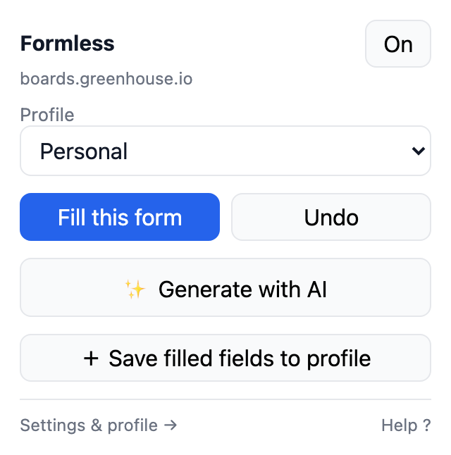
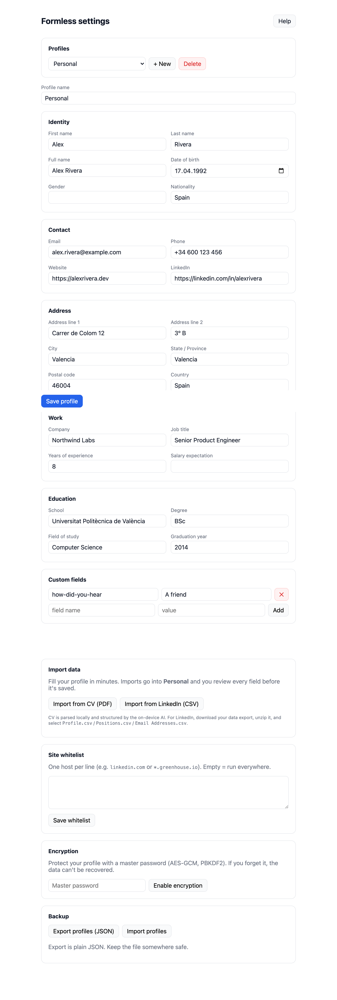

Autofill that also writes the hard part.
Formless fills forms from a profile that lives on your device — and drafts the cover letters, the “why this company”, the “tell us about yourself” using the AI already built into your browser. No account. No server. Nothing leaves your machine.

One panel, four moves. Fill the form. Generate the long answers. Save what you typed by hand for next time. Switch profiles without leaving the popup.
No dashboard to learn, because there's nothing to configure on a server.
“Privacy-first” usually means analytics you can't see.
Formless makes no network requests at all. Open DevTools, watch the Network tab, and use it — the tab stays empty. There is no backend to talk to, no key to leak, and no telemetry endpoint quietly counting your keystrokes.
Built for the forms that actually waste your time
Job applications, visa paperwork, checkouts, conference sign-ups — the same forty fields, forever.
Detection that survives real sites
Reads how each field describes itself — autocomplete, labels, aria-labels, names — and scores candidates instead of guessing by position. React and Vue controlled inputs, selects, radios, dates, shadow DOM.
Cover letters, on-device
Reads the job title, company and description off the page, then drafts from your CV with Chrome's built-in Gemini Nano. Pick tone and length, edit the draft, insert when you're happy.
Profile in a minute
Import a CV as PDF — parsed locally, structured by the on-device model — or drop in your LinkedIn data export. You approve every field before it's saved.
It learns from you
Fill a form by hand once, click Save filled fields to profile, and Formless maps what you typed back into your profile. Passwords, card numbers, CVV, OTP, PIN and SSN are never captured.
Several identities
Personal, work, one per role — switch straight from the popup. Each profile keeps its own data.
Locked when you want it
Optional master password encrypts the vault at rest. The unlocked key lives in session memory and dies with the browser.
Your data never has to travel
Every feature works with the network unplugged. That's not a marketing angle — it's the reason the architecture has no server in it.
- Local storage only. Profile and settings sit in your browser's IndexedDB.
- Encrypted at rest. AES-GCM, key derived from your master password with PBKDF2.
- On-device AI. Prompts and CV fragments are processed by the browser's own model.
- You approve everything. Imports and captures show a field-by-field diff.
- Auditable. MIT licensed — read the code instead of trusting a promise.

What Formless won't do
It won't submit forms for you. It fills and drafts; you read it over and hit send. Applications sent by a robot read like they were sent by a robot.
It won't touch CAPTCHAs or bot detection. No circumvention, on purpose.
It won't ask for your API key. Holding credentials would turn a zero-network extension into one that phones out. The on-device model costs you nothing and leaks nothing.
Install it
Not in the Chrome Web Store yet — the submission is in review-prep. Building from source takes a minute.
# clone, install, build
git clone https://github.com/itchernetski/formless.git
cd formless
npm install
npm run build
Then open chrome://extensions, turn on Developer mode,
click Load unpacked and pick extension/dist.
Works in Chrome, Edge, Brave and other Chromium browsers. AI drafting additionally needs a Chrome build with Built-in AI available — everything else works without it.
Questions people actually ask
Isn't this what my password manager does?
Password managers fill credentials and card details. Formless fills the application — employment history, education, custom questions — and writes the free-text answers. It's not a password manager, and you shouldn't put passwords in it.
Is the on-device model good enough for a real cover letter?
It writes a solid first draft grounded in your CV and the actual posting, and the panel makes you edit before inserting. It is not a frontier model. A paid tier using a hosted model is on the roadmap for people who want that — the local version isn't a trial for it.
What if I forget my master password?
The data is unrecoverable. The key is derived from the password and stored nowhere. Keep a JSON export from Settings → Backup somewhere safe.
Does it work on Workday and other awful ATS platforms?
Often, but coverage grows case by case. If a form fills wrongly, open an issue with the URL — those reports are the single most useful contribution to the project.
Firefox? Safari?
A Firefox build is generated but not yet verified on Gecko — help welcome. Safari would need a separate Xcode wrapper and isn't planned.
How will this stay free?
The local tier costs nothing to run, because it runs on your machine. Later there may be an optional subscription for hosted-model drafting and encrypted sync. The local tier keeps working, unmetered, with no network access.